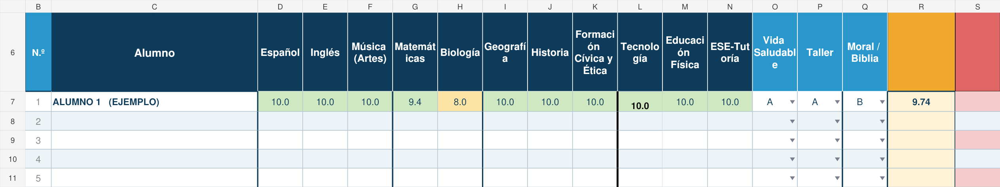

EjemploEvaluación · SEA
Registro de calificaciones con Identidad SEA
Una tabla de secundaria con registro por grupos, trimestres y campos de Identidad SEA.
Compra segura vía Hotmart**Demostración: pagos no habilitados.
Recursos que acompañan tu enseñanza.
Explorar catálogoHerramientas con experiencia en el aula.
Conoce la historia de nuestra marca →
Cuatro áreas para acompañarte en la docencia, la coordinación y la dirección escolar.
Organización, planeación y evaluación para el día a día en el aula.
Explorar solucionesHerramientas para organizar equipos y acompañar el trabajo académico.
Conocer esta áreaApoyos para la gestión, el seguimiento y la mejora de la vida escolar.
Conocer esta áreaPropuestas para colegios del Sistema Educativo Adventista.
Explorar materiales SEAExplora las fichas, descubre su presentación y conoce cómo se usarían.

EjemploUna tabla de secundaria con registro por grupos, trimestres y campos de Identidad SEA.
 Ejemplo
EjemploUn ejemplo para registrar presentes, ausencias, retardos y justificantes de tu grupo.
 Ejemplo
EjemploUna propuesta de instrumentos para valorar proyectos y dar retroalimentación.
Catálogo de ejemplo. Los materiales y los botones de compra se presentan como muestra; todavía no hay ventas habilitadas.
Cuéntanos qué tarea te gustaría simplificar.